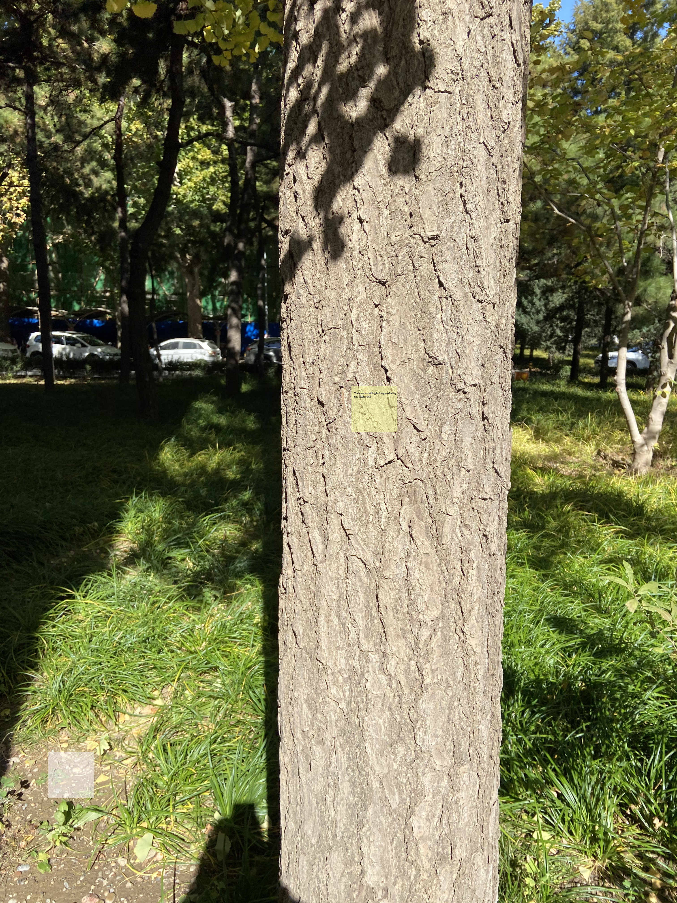
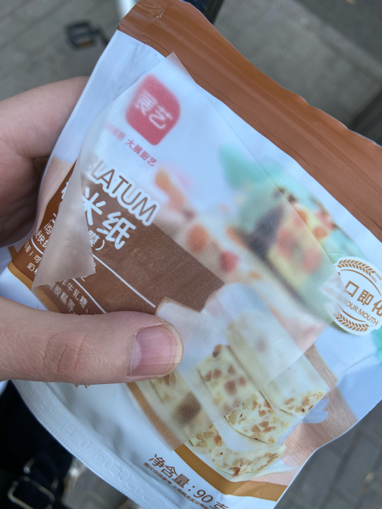

works.
DAY1- disappearable post-it
Guiding Questions
Dose the people who are experiencing frustration/depression willing to show their emotions to other people?
Is there anyway to help them release their emotions?
Brainstorming
Everyone will face lots setbacks, pressures and difficulties in life. Lots of people will bury these pressures under their hearts.
However, hiding it is not a good choice that this kind of emotion will accumulate and eventually develop into depression. What we need to do is get bad emotions/things
out of the chest and release the emotion stuck in your body. Emotions need to be expressed to be processed.
One of the best forms of emotional healing—write it down. When we write, we give a voice to the inner world. We deal with and understand what is happening inside and around us.
We gain perspective; by writing about our fears and hurts, we can look at them from a distance, get rid of them, and finally let go of them.
Writing can be a good form.
The idea
I am trying to find a way to let people express their emotions anytime without any limitation. I think the Post-it can be a suitable medium because it is easy to carry and use.I want to make a transparent and disappearable post-it.Disappearable is my main concept idea for this project. The reason why I think this post-it sticker should be disappearable because I hope the people who are using this sticker can get over their bad emotions and let is disappear. Also I believe the people who wants to use sticker don't want other people to notice their post-it sticker, so this function can help can let them release their emotions more freely. want this to be last for a long time that In this way, the people can be used anywhere without being noticed.
I will find some unique materials for the post-it to make sure it will not destroy the environment as well be able to disappear in a few days. I think the material like glutinous rice paper can be a good example. My goal here is to use the concept of "post-it" to create an emotional connection with the people in "bad mood" and provide them with a way to express their feelings.
prototype

Further development(maybe)
Not all people under depression want to hide their emotions; some people like to seek help from others but afraid to do so.
For the further development of this idea, I think I can create a post-it responding system for those people who are under depression.
For people with depression, what they need most is not an immediate solution to the problem,
but create a connection with their emotions. They need to find a way to talk with other people
The people who post this "post-it" sticker can be the anonymous initiator, and people who have a chance to look at their post can be the emotional responder.
This can be a different idea from the original one that it creates a new way of interaction. This is just a brief thought.
To-do list
1. try to use the glutinous rice paper to create a post-it to test, to see whether it can be the medium of this work or not.
UPDATE:


glutinous rice paper actually works and It will disappear when it touches water.It's not bad but I need to figure out how to make it more sticky.
2. try to think more about the further development, how to make the interactive circle.